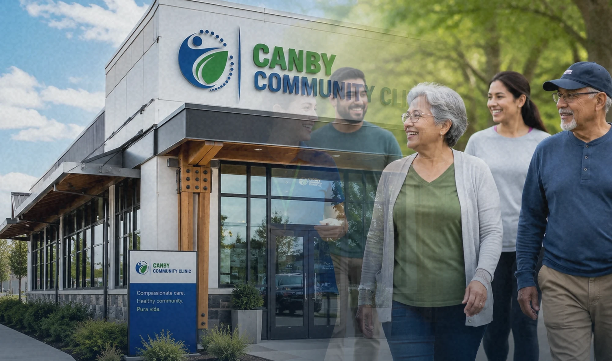

Tell Us What You Need
Request a callback, call the clinic, or begin the new-patient portal preview.
Choose a Starting PointFollow the heartbeat, then choose the path that fits what you need today.

Good care is not only a visit. It is knowing where to begin, understanding what happens next, and having a team that helps keep the timeline connected.
Our website is designed around the questions patients actually have before, during, and after care.
Request a callback, call the clinic, or begin the new-patient portal preview.
Choose a Starting PointSee what to bring, complete intake information, and organize your medication list.
Open Patient ResourcesThe patient portal front end shows how appointments, notes, prescriptions, results, and documents will live together.
Preview the PortalAvailability and eligibility may vary. Call the clinic to confirm the right next step.
Routine visits, health concerns, medication review, and coordinated follow-up.
Screening conversations, risk review, vaccinations, and wellness planning.
Clear medication lists, access questions, reconciliation, and safety guidance.
Help understanding the process before a test, referral, or specialty visit.
Canby Community Clinic is built around a straightforward idea: health information should be understandable, care should be easier to navigate, and follow-up should not disappear between offices.
V4 includes a polished front-end preview of the future patient portal. It demonstrates how patients will access appointments, notes, prescriptions, results, documents, messages, and profile information after a secure backend is connected.
Long-form health education with local context, source links, clear limitations, and practical takeaways.
Trust, continuity, and chronic-disease prevention are not separate projects. Recent research shows why they work best as one system.
Read the Research Review

Support patient education, community outreach, and the systems that help care remain accessible and understandable.
Choose a Donation Amount